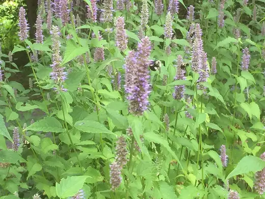

Drinks · Popular in Prairies
Anise hyssop tea
Anise hyssop tea is made with wild anise hyssop, a favourite in Prairies.

How do you make anise hyssop tea?
Fresh or dried leaves and flowers steeped for a sweet liquorice tea.
Wild ingredients
- Anise hyssop (Agastache foeniculum): in season June to September